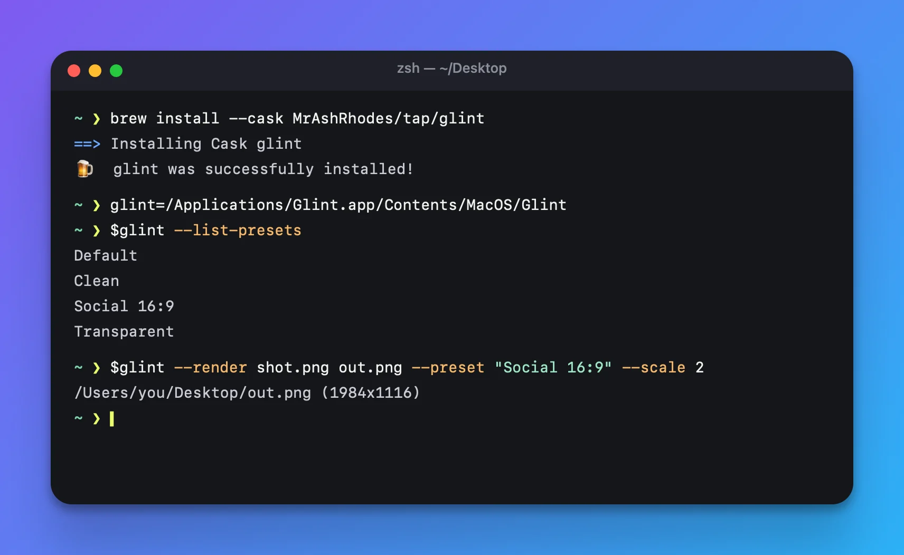
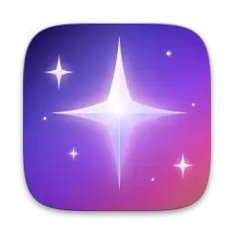

Catch the right bit.
An area, a window, your whole screen. Set a timer, repeat your last capture, or open an image you already have. Recognise text on-device and send it to your clipboard.
Capture & keyboard shortcutsCapture the useful bit. Give it a little space.
Make your point, then pass it on.
Free & open source macOS 14+

Same tool.
Different stories.
Real exports. Original sample artwork. A preview of the results, not the app’s editor.
Meet the Mac app02 / From capture to finished
An area, a window, your whole screen. Set a timer, repeat your last capture, or open an image you already have. Recognise text on-device and send it to your clipboard.
Capture & keyboard shortcuts32 backgrounds, your own image, or your desktop wallpaper. Fine-tune padding, corners and shadows. Balance margins, change the aspect ratio, or add a window frame.
Use your desktop wallpaperArrows, text, shapes, highlights and numbered steps. Blur, pixelate or cover sensitive details. Optional on-device detection is a first pass, not a guarantee—always review before sharing.
Annotations & redactionCopy, save, share or drag straight into another app. Export PNG, JPEG, HEIC or TIFF at 1× or 2×. Save your own presets, or render a batch of images from a script.
The automation reference03 / Take it from here
Free, open source and yours to keep.
macOS 14+ · Apple silicon & Intel.

brew install --cask MrAshRhodes/tap/glintAlready have Homebrew? One command puts Glint in Applications.
Download the archive and its matching .sha256 file from the same release. Follow the verification and installation guide before extracting the ZIP or opening the DMG. Only after verification succeeds, move Glint.app to Applications, open it and grant Screen Recording access when prompted.
Before you install: releases are ad-hoc signed, not Apple-notarized. macOS may block a manual download. The Homebrew cask removes this app’s quarantine flag. Review the project and signing details before deciding to install.
Updates are manual. Quit Glint, run brew update && brew upgrade --cask glint, then reopen it. Download users can choose Check for Updates…, then download and verify the new archive against its matching .sha256 file before replacing the app. Update instructions.
04 / Good to know
Yes. Glint is open source under the MIT license. No subscription, no account and no watermark requirement. Download a release, build it yourself, or contribute on GitHub.
Glint does not upload your screenshots. Manually choosing Check for Updates contacts GitHub to check the latest release. Sharing and opening links use the apps and destinations you choose.
No. Check for Updates tells you about a newer release; it does not install it. Homebrew users run brew update && brew upgrade --cask glint with Glint closed. brew update alone does not upgrade the app. See all update instructions.
Treat it as a helpful first pass. Detection can miss sensitive information. Inspect the exported image and use solid redaction for private details. An untouched raw copy may still exist if you keep capture history. Read the privacy guidance.
No. Glint is an independent project with its own identity. Every sample on this page is original artwork, rendered with Glint.
Open an issue with your macOS version, Glint version and steps to reproduce. Remove private information from screenshots and diagnostic output first.